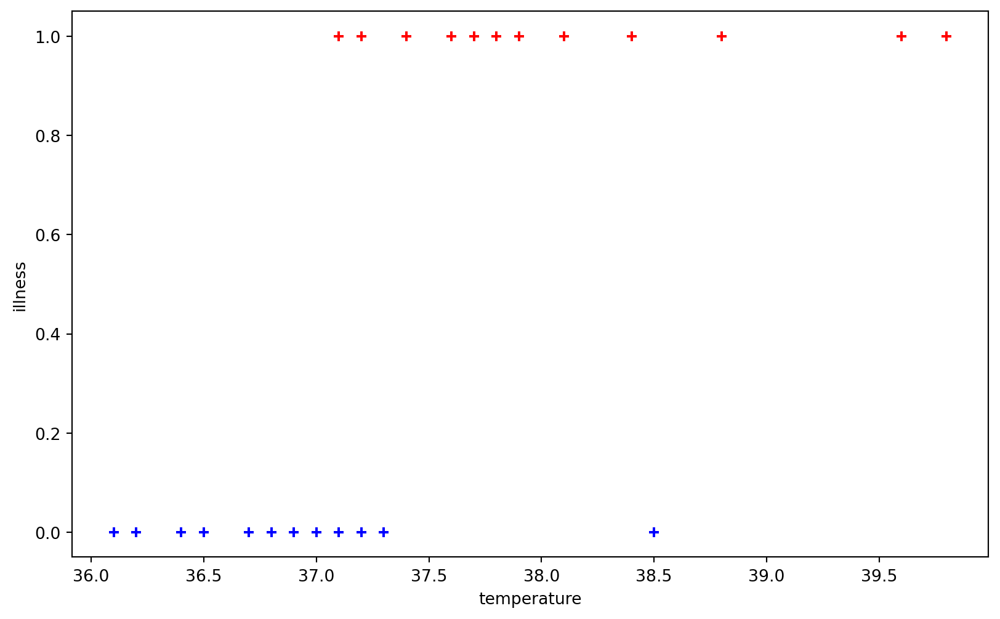
0x03 逻辑斯谛回归
徐岩
二分类问题
- 如何线性可分，那么使用感知机即可解决
- 但现实情况中，可能会遇到“线性几乎可分”的数据，此时感知机无法使用（不收敛）
一、体温问题
宝宝是否发烧了？
成人一般体温超过37度就可能发烧了
而有的幼龄宝宝尚处于发育阶段，体温波动幅度较大，可能在健康情况下体温也会达到37.1度
现有某宝宝的一些体温与是否生病（1或0）的记录，如何得到一个“靠谱”的临界判断温度呢？或者说如何对一个新产生的体温进行是否发烧的评估呢？
宝宝是否生病了？
- 给定体温数据集 \((x_i,Y_i)\)，其中 \(x_i\) 为体温，\(Y_i\in \{0,1\}\) 为是否生病的标签
- 建立模型，在给定新的体温时能够预测是否生病
- 假设：在体温较高时，生病的情况比不生病的情况多，反之亦然
二、 建模
决策函数
\[ f(x)= \begin{cases} 1\quad x\geqslant 37.1\\ 0\quad x<37.1 \end{cases} \]
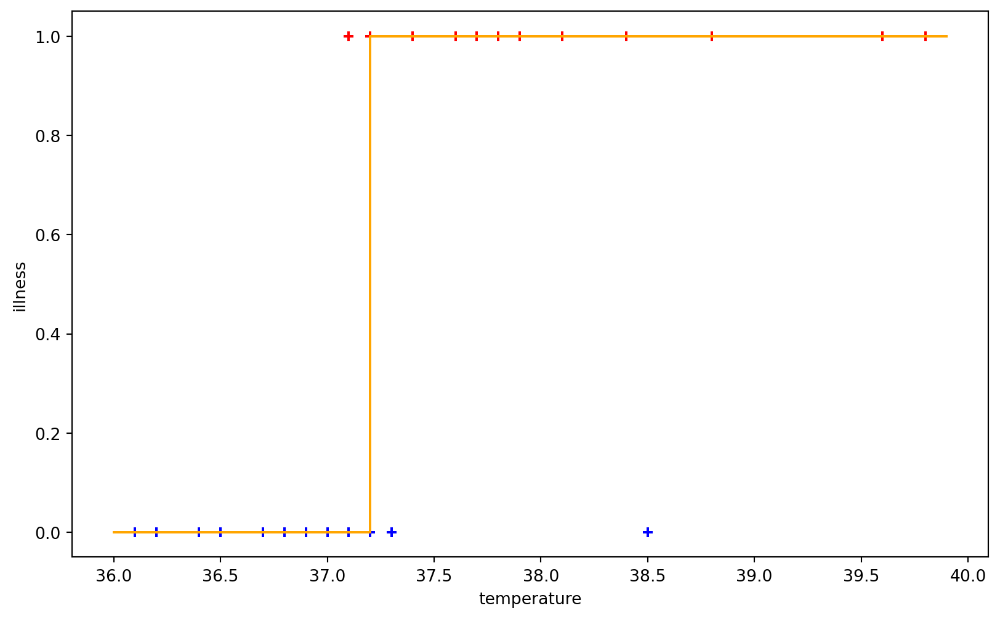
- 分段函数，分界点如何确定？
- 过于生硬，与之相关的损失函数很可能不可导
- 希望再“平滑”一点
理想的决策函数
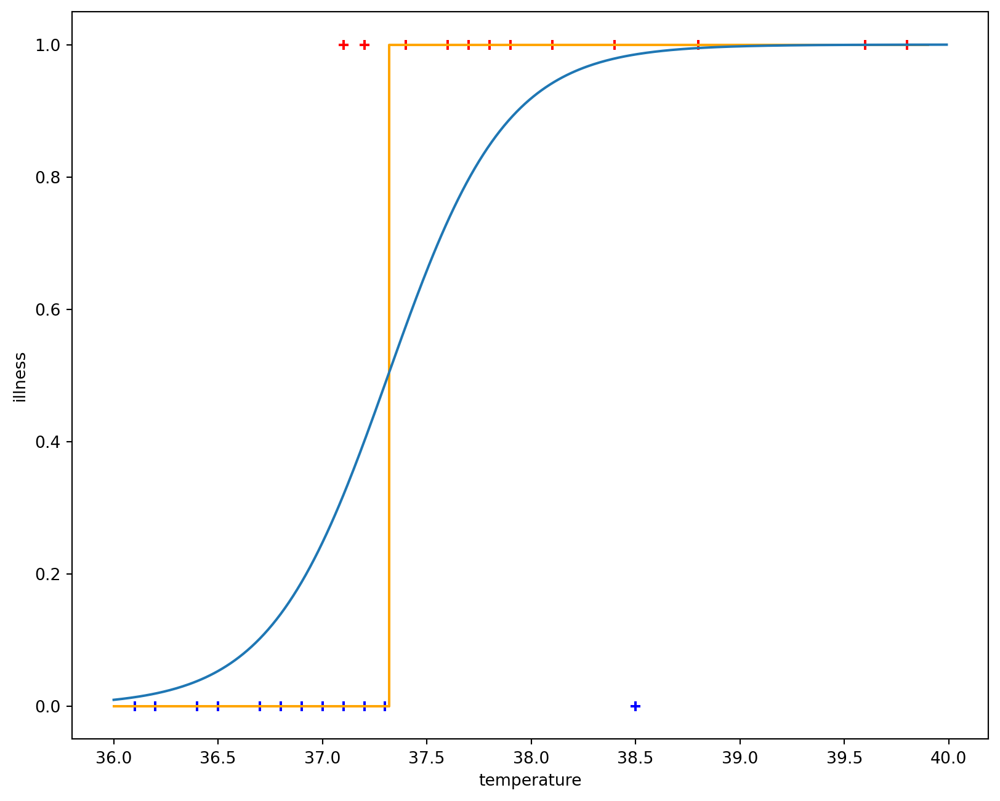
- 非分段函数
- 函数值 \(f(x)\) 满足：\(0<f(x)<1\)
- 存在对称中心
- 函数值一直在增长
- 偏离对称中心后，迅速收敛到 0 或 1
- 在对称中心附近增长很快
- 函数值可以理解为是正类的概率
补充：指数函数
- 函数 \(y=a^x\) 称为指数函数，注意 \(a>0,a\neq 1\)。\(x=0\) 时，函数值为 \(1\)。
- 典型代表：\(y=e^x\)，其中 \(e\) 约等于 \(2.71828\)，类似于 \(\pi\)，是一个无理数。\(y=e^x\) 的图像为:
尝试
- 使用常数、反比例函数 \(y=\frac{1}{x}\) 和 指数函数 \(y=e^x\) 复合出有下面图像的函数
- 即：使用常数、\(e\)、\(x\)、加减乘除乘方运算组合出有下面图像的函数，尝试
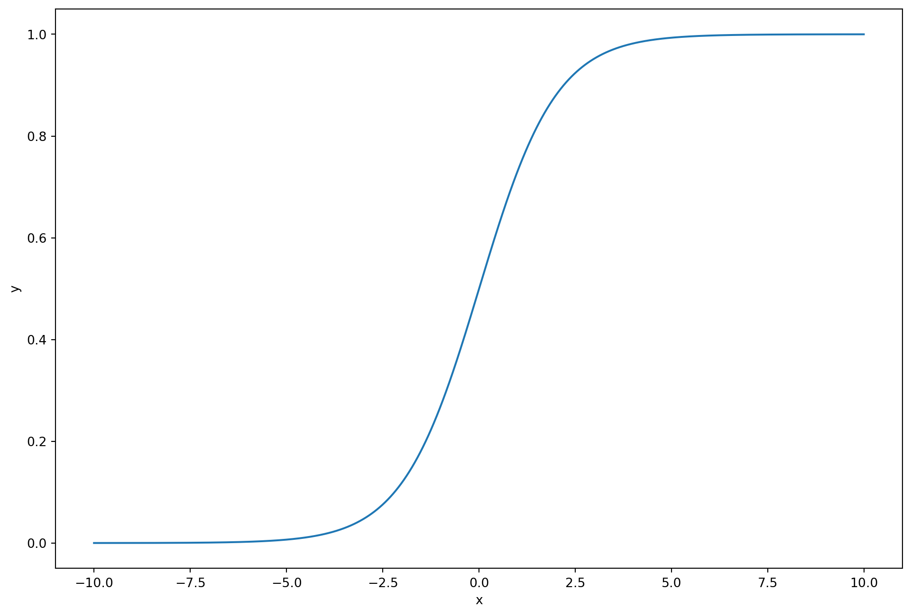
sigmoid函数：\(y=\frac{1}{1+e^{-(ax+b)}}\)
决策函数
- 决策函数：\(f(x)=\frac{1}{1+e^{-(ax+b)}}\)
- 根据 \(f(x)\) 预测结果：
- 如果 \(f(x)\geqslant 0.5\)，则认为是正类（生病）
- 如果 \(f(x)<0.5\)，则认为是负类（不生病）
损失函数——均方误差？
- 决策函数：\(f(x)=\frac{1}{1+e^{-(ax+b)}}\)
- 损失函数：\(L(a,b;T)=\sum\limits_{i=1}^m loss(a,b;x_i,Y_i)\)
- 由于参数 \(a,b\) 一定会拿来计算 \(f(x)\)，因此 \(loss(a,b;T)\) 也可写作：\(loss(f(x_i),Y_i)\)
- MSE损失函数：\(L(a,b;T)=\sum\limits_{i=1}^m (f(x_i)-Y_i)^2\)
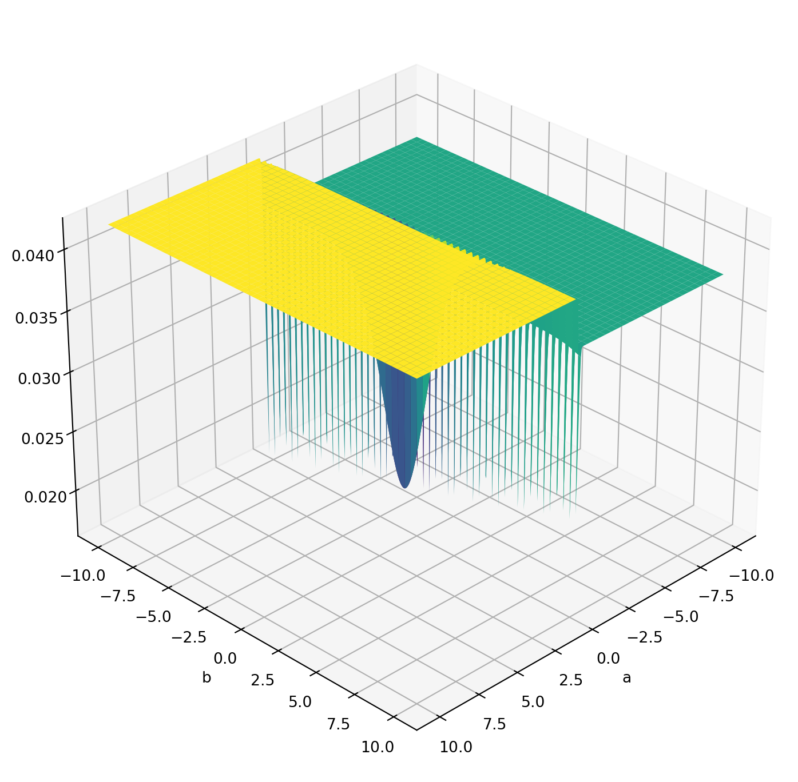
均方误差的损失函数是不是凸函数？
- 吴恩达讲义：非凸 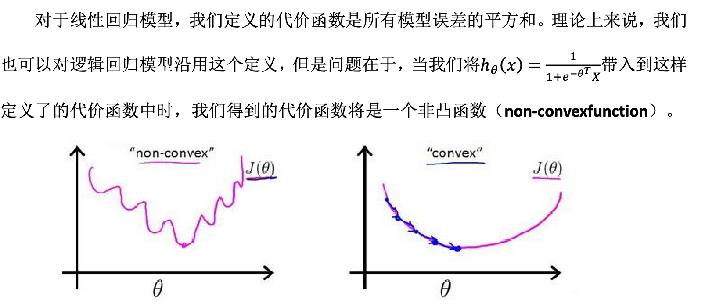
均方误差的损失函数是不是凸函数？
- 问deepseek：
- 逻辑斯谛回归的损失函数为什么不使用均方误差？
- 非凸，存在多个局部极小值
- 部分位置梯度很小，参数更新缓慢
- 不符合概率模型假设
- 为什么逻辑斯谛回归中均方误差的损失函数是非凸的？
- 给出了理论证明
- 逻辑斯谛回归的损失函数为什么不使用均方误差？
均方误差的损失函数是不是凸函数？
- Geogebra：https://www.geogebra.org/classic/xs7wqtmh
- Why not Mean Squared Error(MSE) as a loss function for Logistic Regression? 🤔
- 知乎：对于逻辑回归，为什么说平方损失函数是非凸的？
- CSDN：为什么不用平方误差（MSE）作为Logistic回归的损失函数？
- 使用梯度下降时发现，初始点梯度容易为0，参数几乎不更新，无法“下降”
损失函数——均方误差
- 均方误差时，\(loss(f(x_i),Y_i)=(f(x_i)-Y_i)^2\) ，当 \(Y_i=1\) 时，预测值 \(f(x_i)\) 越接近 \(1\)，\(loss\) 值越接近 \(0\)；反之如果预测值 \(f(x_i)\) 越接近 \(0\)，则 \(loss\) 值越接近1（见下图）
- 在 \(f(x_i)\) 和 \(Y_i\) 的值都很小时，“惩罚”得不够“明显”
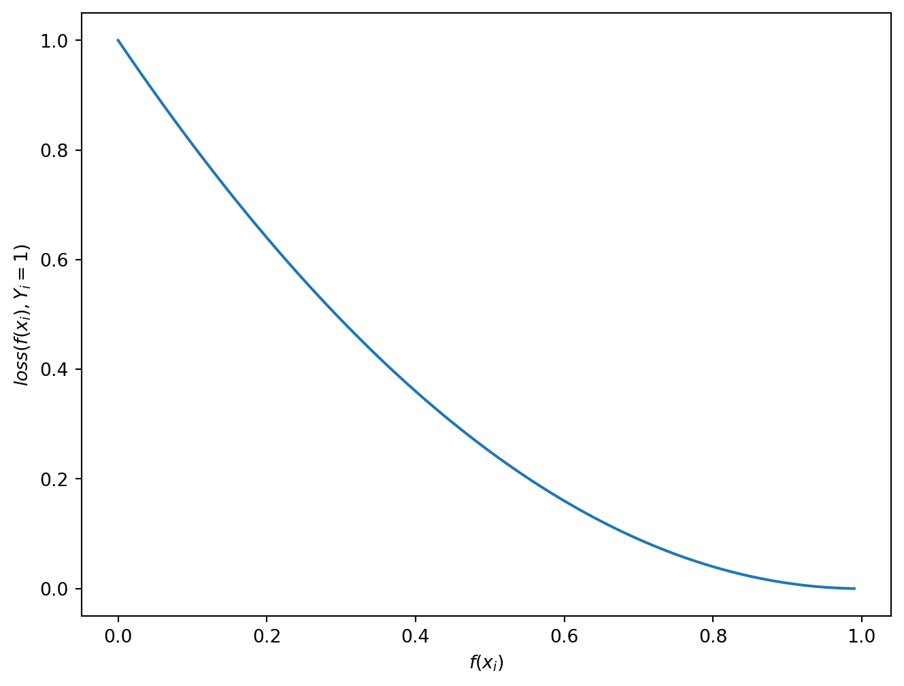
损失函数
- 考虑更好的 \(loss(f(x_i),Y_i)\) 形式，按 \(Y_i\) 分类：
- 当 \(Y_i=1\) 时，预测值 \(f(x_i)\) 越接近 \(1\)，\(loss\) 值越接近 \(0\)；反之如果预测值 \(f(x_i)\) 越接近 \(0\)，则 \(loss\) 值越接近无穷大（见下图）
- 当 \(Y_i=0\) 时，预测值 \(f(x_i)\) 越接近 \(0\)，\(loss\) 值越接近 \(0\)；反之如果预测值 \(f(x_i)\) 越接近 \(1\)，则 \(loss\) 值越接近无穷大。
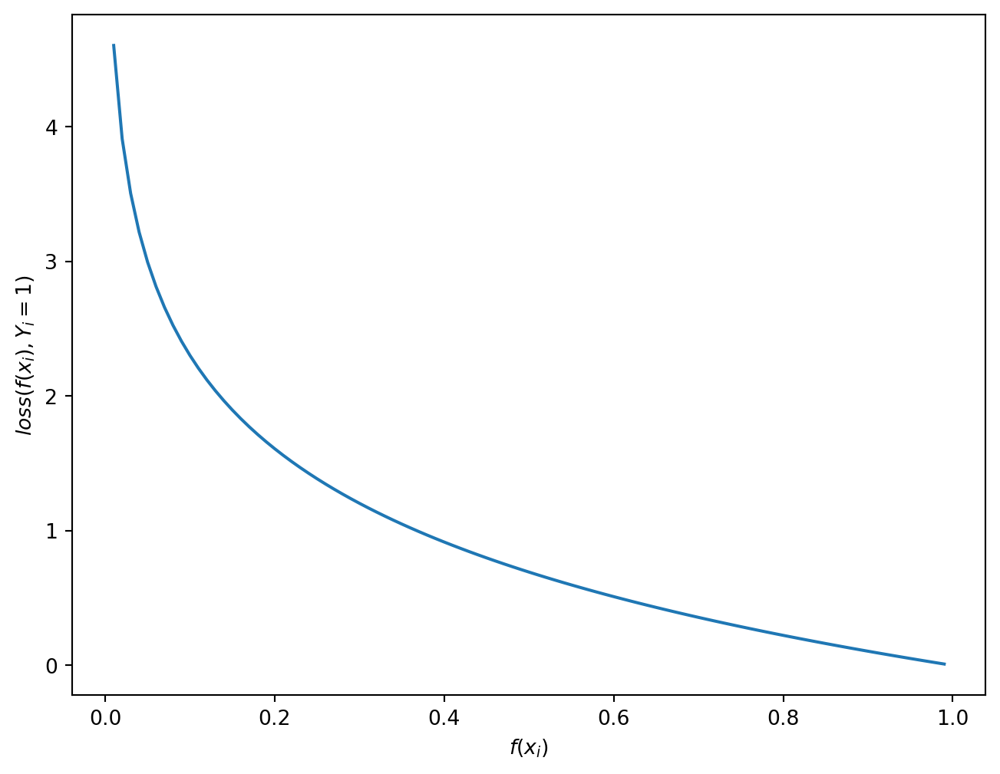
损失函数（\(Y_i=1\)）
- 当 \(Y_i=1\) 时，记 \(loss(f(x_i),Y_i)=g(f(x_i))\)，则希望能找到如下图图像的一个函数： \(g(x)\)
- \(x\) 越接近 \(1\)，\(g(x)\) 值越接近 \(0\)；
- \(x\) 越接近 \(0\)，\(g(x)\) 值越接近无穷大。
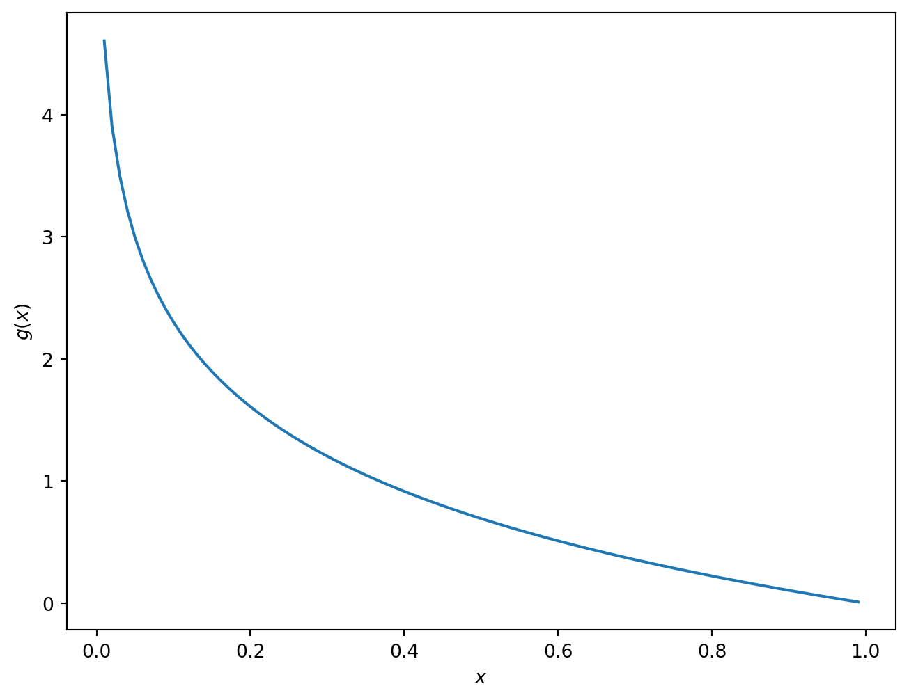
补充：对数函数
- 典型代表：\(y=\ln x\)，满足 \(e^y=x\)，图像如下：

损失函数（\(Y_i=1\)）
- 左图：\(y=\ln x\)，即 \(e^y=x\)
- 右图：\(g(x)=?\)
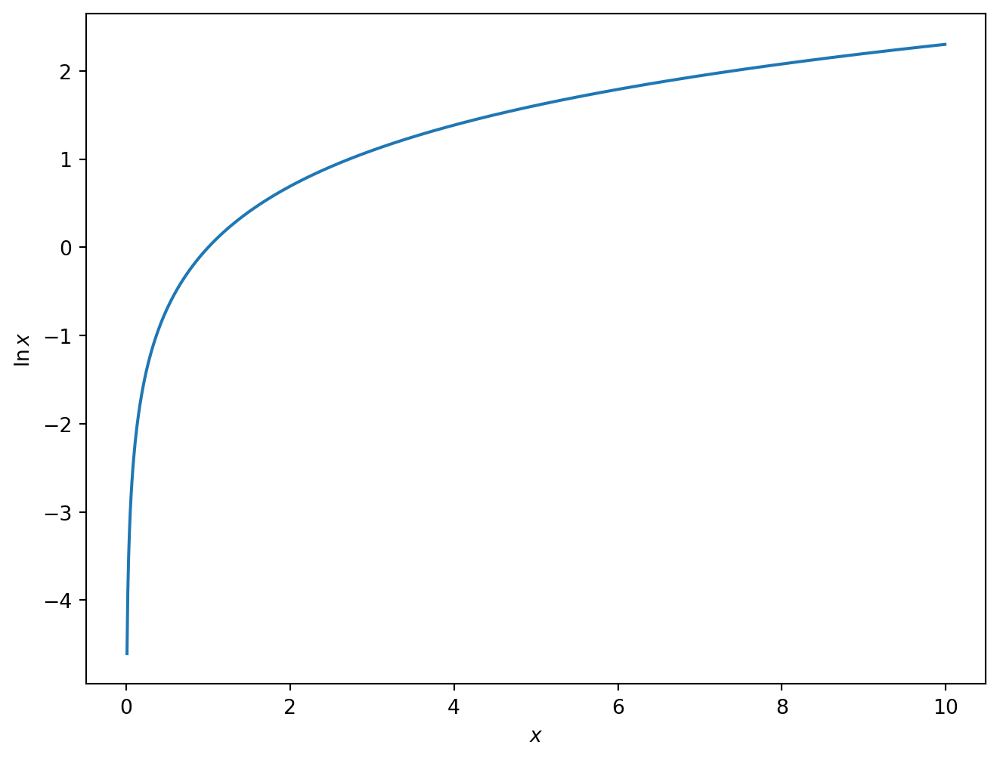
损失函数（\(Y_i=0\)）
- 当 \(Y_i=0\) 时，记 \(loss(f(x_i),Y_i)=h(f(x_i))\)，则希望能找到如下图图像的一个函数： \(h(x)\)。
- \(x\) 越接近 \(0\)，\(h(x)\) 值越接近 \(0\)；
- \(x\) 越接近 \(1\)，则 \(h(x)\) 值越接近无穷大
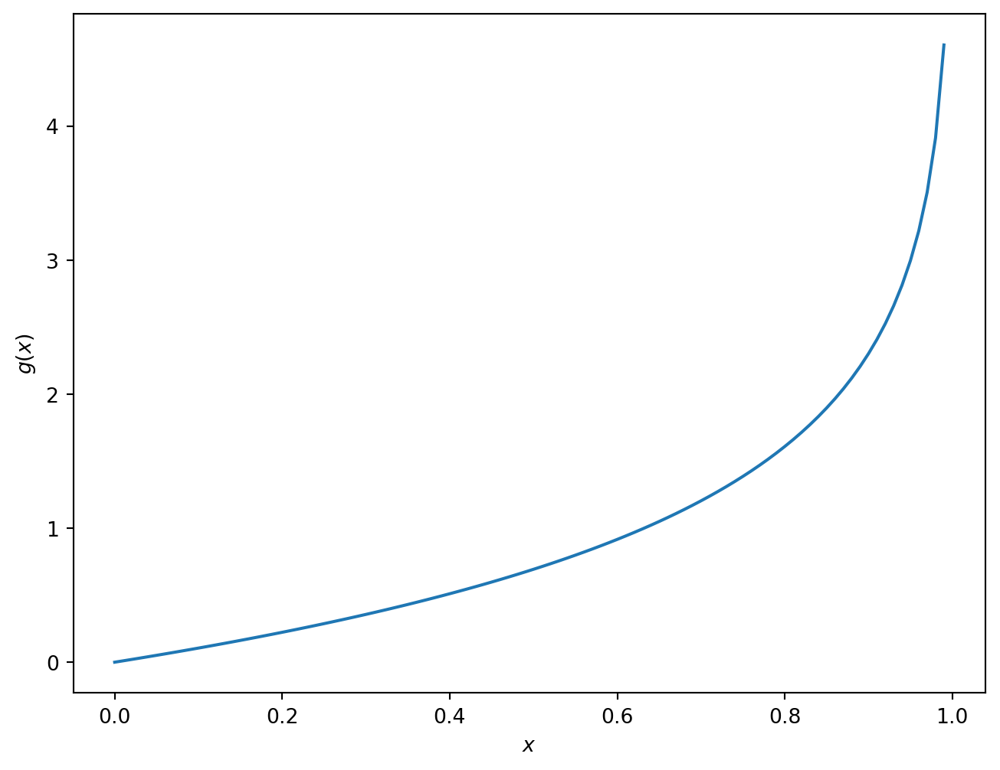
损失函数（\(Y_i=0\)）
- 左图：\(y=\ln x\)，即 \(e^y=x\)
- 右图：\(h(x)=?\)
损失函数
- 综上，损失函数可以写成： \[ loss(f(x_i),Y_i)= \begin{cases} -\ln(f(x_i)),\quad &Y_i=1\\ -\ln(1-f(x_i)),\quad& Y_i=0 \end{cases} \]
- 挑战：把 \(loss(f(x_i),Y_i)\) 写非分段的形式，即一个统一的形式
- \(loss(f(x_i),Y_i)=-(Y_i\ln(f(x_i))+(1-Y_i)\ln(1-f(x_i)))\)
- 总损失函数： \[ L(a,b;T)=\frac{1}{m}\sum\limits_{i=1}^m loss(f(x_i),Y_i)=-\frac{1}{m}\sum\limits_{i=1}^m(Y_i\ln(f(x_i))+(1-Y_i)\ln(1-f(x_i))) \]
- 事实上，此损失函数有一个专有名称：交叉熵，有信息论和概率上的意义。
损失函数
- 凸函数，可以使用类似线性回归的梯度下降方法求解
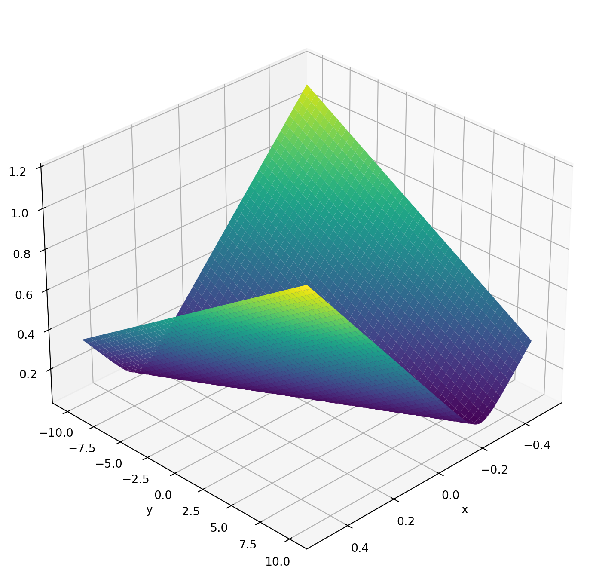
动手计算
- 决策函数：\(f(x)=\frac{1}{1+e^{-(ax+b)}}\)
- 损失函数： \[ L(a,b;T)=\frac{1}{m}\sum\limits_{i=1}^m loss(f(x_i),Y_i)=-\frac{1}{m}\sum\limits_{i=1}^m(Y_i\ln(f(x_i))+(1-Y_i)\ln(1-f(x_i))) \]
- 求导：
- \(L_a(a,b;T)=\frac{1}{m}\sum\limits_{i=1}^m(\frac{1}{1+e^{-(ax_i+b)}}-Y_i)x_i=\frac{1}{m}\sum\limits_{i=1}^m(f(x_i)-Y_i)x_i\)
- \(L_b(a,b;T)=\frac{1}{m}\sum\limits_{i=1}^m(\frac{1}{1+e^{-(ax_i+b)}}-Y_i)x_i=\frac{1}{m}\sum\limits_{i=1}^m(f(x_i)-Y_i)\)
动手计算——导数法
困难，略
动手计算——梯度下降
- 切线指方向，导数定步长
- 任选 \((a,b)\) ，每次同时更新： \[ \begin{cases} a_{k+1}=a_k-\alpha L_a(a,b;T)\\ b_{k+1}=b_k-\alpha L_b(a,b;T) \end{cases} \]
- 可以证明，选取合适的 \(\alpha\) 时，可以收敛到最小值
- 更一般地，损失函数满足一定的条件（凸性、可微与Lipschitz连续性）时，梯度下降可以收敛最小值
0x03 逻辑斯谛回归